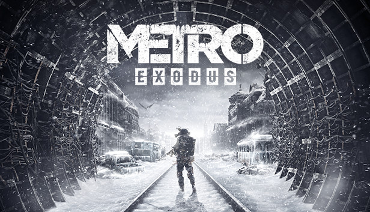
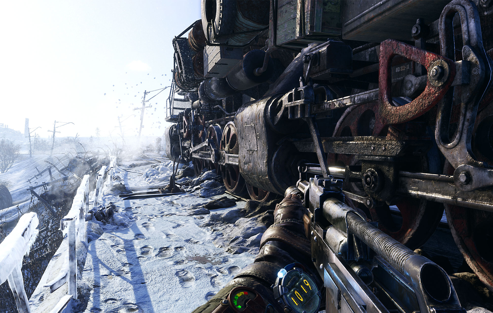

Metro Exodus
Metro Exodus is a first-person shooter video game developed by 4A Games and published by Deep Silver. It is the third installment in the Metro video game trilogy based on Dmitry Glukhovsky's novels, following the events of Metro 2033 and Metro: Last Light. It released in 2019 for Microsoft Windows, PlayStation 4, Xbox One and Stadia and in 2020 for Amazon Luna. A Linux and MacOS conversion is set to release on April 14, 2021. An enhanced version of the game is also planned to release for PlayStation 5 and Xbox Series X/S later in 2021. The game received positive reviews from critics.
Metro Exodus is a first-person shooter game with survival horror and stealth elements. Set in the post-apocalyptic wasteland of the former Russian Federation and Republic of Kazakhstan, the player must cope with the new hazards and engage in combat against mutated creatures as well as hostile humans. The player wields an arsenal of hand-made weaponry which can be customised through scavenging materials and a crafting system. The game features a mixture of linear levels and sandbox environments. It also includes a dynamic weather system, a day-night cycle, and environments that change along with the seasons as the story progresses. It is set over the course of one whole in-game year.
